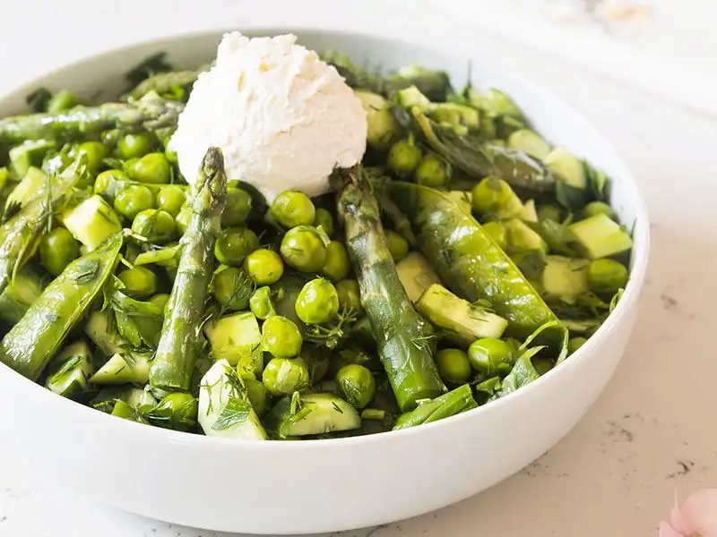

VEGETARIAN FOODS
- 1 cup fine bulgur
- 1 cup boiling water
- 2 tablespoons tomato paste
- 1 cup finely grated mixed vegetables (carrots, zucchini, bell peppers, onions)
- 1/4 cup olive oil
- 1 teaspoon salt
- 1 teaspoon ground cumin
- 1 teaspoon paprika
- 1/2 teaspoon black pepper
- Fresh parsley, finely chopped (for garnish)
- Place the fine bulgur in a large bowl.
- Pour the boiling water over the bulgur, cover the bowl with a lid or plastic wrap, and let it sit for 15-20 minutes until the bulgur absorbs the water and becomes soft.
- Once the bulgur is ready, add the tomato paste, pepper paste (if using), grated mixed vegetables, olive oil, salt, cumin, paprika, black pepper, and red pepper flakes (if using).
- Mix all the ingredients thoroughly until well combined.
- Knead the mixture with your hands for about 5-10 minutes until it becomes a soft and homogenous dough-like consistency.
- Take a portion of the mixture and shape it into small, round or oval patties with your hands.
- Optionally, create a hollow in the center of each patty to add a filling later.
- Place the vegetable patties on a serving platter. Garnish with finely chopped fresh parsley.
- If desired, fill the hollow in the center of each patty with lettuce leaves, cherry tomatoes, and cucumber slices.
- Serve the Vegtable Patties as a delicious and healthy appetizer or main dish.
VEGETABLE PATTIES
Ingredıents:

KAYGANA
Ingredıents:
- 2 cups all-purpose flour
- 1 cup lukewarm water
- 1 teaspoon active dry yeast
- 1 teaspoon sugar
- 1 teaspoon salt
- Olive oil for frying
- In a small bowl, combine the lukewarm water, active dry yeast, and sugar. Stir gently and let it sit for about 5-10 minutes until it becomes frothy
- In a large mixing bowl, combine the flour and salt.
- Pour the frothy yeast mixture into the flour and mix to form a sticky dough.
- Flour a clean surface and transfer the dough onto it
- Knead the dough for about 5-7 minutes until it becomes smooth and elastic.
- Place the dough back into the mixing bowl, cover it with a kitchen towel, and let it rise in a warm place for about 1 hour or until it doubles in size
- Once the dough has risen, divide it into small portions (about the size of a golf ball)
- Take one portion of the dough and flatten it with your hands to form a round or oval shape
- Heat a non-stick pan over medium heat and add a bit of olive oil.
- Place the shaped dough into the pan and cook until both sides are golden brown. This usually takes 2-3 minutes per side
- Repeat the process for the remaining portions of dough, adding more oil to the pan as needed.
- Serve the kaygana warm. It can be enjoyed on its own, with cheese, or with a drizzle of honey.

CHEESE STUFFED SULTAN PEAS
Ingredıents:
- 2 cups fresh or frozen peas
- Water for boiling
- 1 teaspoon salt
- 1 cup feta cheese, crumbled
- 1/4 cup parsley, finely chopped
- 1 tablespoon olive oil
- 1 teaspoon lemon juice
- Salt and pepper to taste
- 2 tablespoons olive oil
- 1 onion, finely chopped
- 2 cloves garlic, minced
- 1 can (14 ounces) crushed tomatoes
- 1 teaspoon dried oregano
- Salt and pepper to taste
- Bring a pot of water to boil. Add the peas and salt, and cook for 2-3 minutes until they are slightly tender. Drain and set aside.
- In a bowl, combine crumbled feta cheese, finely chopped parsley, olive oil, lemon juice, salt, and pepper. Mix well to form a creamy filling.
- Once the peas have cooled slightly, carefully scoop out a small portion from each pea to create a cavity.
- Fill each pea with the cheese filling mixture.
- In a saucepan, heat olive oil over medium heat. Add finely chopped onion and minced garlic, sauté until softened
- Add crushed tomatoes, dried oregano, salt, and pepper. Simmer for about 10 minutes until the sauce thickens
- Arrange the stuffed peas on a serving platter. Pour the warm tomato sauce over the peas.
- Garnish with additional chopped parsley or a drizzle of olive oil if desired.
- Serve the Peynirli Sultani Bezelye warm as a delicious appetizer or side dish.

KIDNEY BEAN DISH
Ingredıents:
- 1 cup beans , soaked overnigh
- 1 onion, finely chopped
- 2 tomatoes, diced
- 1 green bell pepper, chopped
- 2 cloves garlic, minced
- 2 tablespoons tomato paste
- 3 tablespoons olive oil
- 1 teaspoon ground cumin
- 1 teaspoon paprika
- Salt and black pepper to taste
- Fresh parsley, chopped (for garnish)
- Rinse the dry borlotti beans thoroughly and soak them in water overnight. Drain before using.
- In a large pot, add the soaked borlotti beans and cover with water. Bring to a boil and then reduce the heat to a simmer. Cook until the beans are tender but not mushy (usually about 45-60 minutes). Drain the cooked beans.
- In a separate pan, heat olive oil over medium heat.
- Add chopped onions and sauté until they become translucent.
- Add minced garlic, diced tomatoes, and chopped green bell pepper. Cook until the vegetables are softened.
- Stir in tomato paste, red pepper flakes (if using), ground cumin, paprika, salt, and black pepper. Cook for a few minutes until the flavors meld.
- Add the cooked borlotti beans to the vegetable mixture. Stir well to combine and let it simmer for an additional 10-15 minutes.
- Garnish with fresh chopped parsley.
- Serve the Kidney Beans Dish hot, optionally with a slice of lemon on the side.